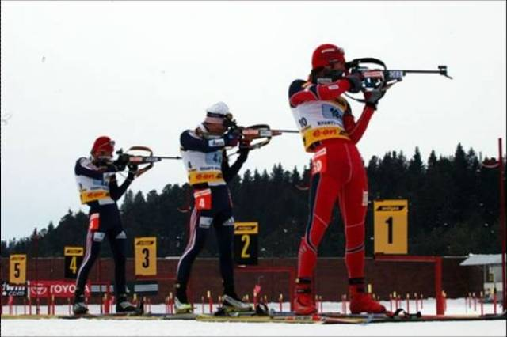

Биатлон
Биатлон впервые был включен в зимнюю программу Олимпийских игр
в 1960 году.
Вне всяких сомнений биатлон – один из самых зрелищных видов спорта, входящих в программу Олимпийских игр. Биатлонист должен совмещать в себе качества лыжного гонщика и стрелка – в этом и есть основная специфика. Не зря дословный перевод слова «биатлон» с латинского будет звучать как «двойная борьба» – состязание скорости и меткости.
Корни этого вида спорта уходят во времена глубокой древности. Охота на лыжах являлась частью быта многих северных народов. Однако рассматривать биатлон как некое спортивное действо стали только с конца XVIII века, когда на шведско-норвежской границе были проведены соревнования, отдаленно напоминавшие современный вариант состязаний.
Из-за пацифистических настроений, связанных со II Мировой войной, долгое время этот тип состязаний не включали в программу зимних Олимпийских игр. Но уже в 1954 году Международный олимпийский комитет (МОК) официально признал биатлон видом спорта. В 1958 был приведен крупнейший старт – чемпионат мира в Зальфельдене (Австрия), а через два года биатлон, представленный исключительно мужскими соревнованиями, включен в программу зимних Олимпийских игр. При этом женщины получили право выступать наравне с мужчинами только в 1992 году на Олимпиаде во французском Альбервиле.
Интересный факт
Биатлон бывает летним, где лыжи отсутствуют. Биатлонисты бегут от одного огневого рубежа до другого без ружей. Винтовки стоят около мишеней
Наибольшую популярность и распространение биатлон получил в странах северной, восточной и центральной Европы. Спортсмены из Германии, Австрии, Франции, Швеции, России, Норвегии, Польши, являющиеся лидерами современного биатлона, каждую зиму встречаются на лучших стадионах мира и соревнуются, как правило, в шести дисциплинах:
1. Индивидуальная гонка – классический вид биатлонной гонки на 20 км для мужчин и 15 км для женщин. Спортсмены проходят пять кругов и четыре огневых рубежа, при этом первая и третья стрельба происходит лежа, а вторая и четвертая – стоя. Стартуют биатлонисты обычно с интервалом 30-60 секунд. А за каждый промах к общему времени прибавляется по одной штрафной минуте.
2. Спринт – гонка на 10 км для мужчин и на 7,5 км для женщин с двумя огневыми рубежами. Биатлонисты стреляет один раз лежа, второй – стоя. За каждый промах предусмотрено прохождение штрафного круга, составляющего 150 метров. Спринт является отбором к гонке преследования. Легендарная российская лыжница и биатлонистка Анфиса Резцова выиграла первое олимпийское золото именно в спринте в 1992 году в Альбервиле.
3. Гонка преследования (пасьют) – гонка на 12,5 км для мужчин и на 10 км для женщин с четырьмя огневыми рубежами. Как правило, проводится по итогам спринта. В программу зимних Олимпийских игр была включена в 2002 году в Солт-Лейк-Сити. Первым чемпионом в этом виде программы стал ветеран современного биатлона Уле-Эйнар Бьёрндален, 6-кратный олимпийский чемпион, 19-кратный чемпион мира. Среди женщин первой обладательницей золота в Солт-Лейк-Сити (США) стала россиянка Ольга Медведцева, выигравшая медаль под фамилией Пылёва.
4. Масс-старт – гонка с общего старта на 15 км у мужчин и на 12,5 км у женщин с четырьмя огневыми рубежами. За каждый промах спортсмены проходят дополнительные 150 метров штрафа. Один из самых молодых видов биатлонных гонок, в программу зимних игр включен только с 2006 года.
5. Эстафета – командное состязание в биатлоне. По одному представителю от каждой страны (всего бегут четыре биатлониста) выходят на старт одновременно и, пробежав свой этап, передают эстафету следующему спортсмену из своей команды. Каждый имеет по три запасных патрона на каждой стрельбе.
6. Смешанная эстафета – в целом проводится по тем же принципам, что и обычная эстафета, разница лишь в участниках – в смешанной эстафете от одной команды сначала выступают две представительницы прекрасного пола, затем – двое мужчин. Кстати, на Олимпийских играх в Сочи этот вид программы будет представлен впервые.
Таким образом, в Сочи в биатлонных соревнованиях будет впервые разыграно 11 комплектов наград. Часто бывает, что исход гонок решается на последнем подъеме или даже на финишной прямой. Любое внешнее условие, будь то внезапно поднявшийся ветер на огневом стрельбище или случайно забившийся в винтовку снег, может откинуть спортсмена, считавшегося фаворитом, за десятку сильнейших. Эта непредсказуемость и приковывает сотни тысяч любителей биатлона по всему миру к экранам телевизоров.
Российская сборная, в числе которой чемпионы и призеры Олимпийских игр и чемпионатов мира, будет бороться за самые высокие позиции на пьедестале почета на домашней Олимпиаде в Сочи. А мы будем переживать за наших биатлонистов, сжимая от волнения кулачки!
{kind=link}
{kind=link}
{kind=link}
{kind=link}